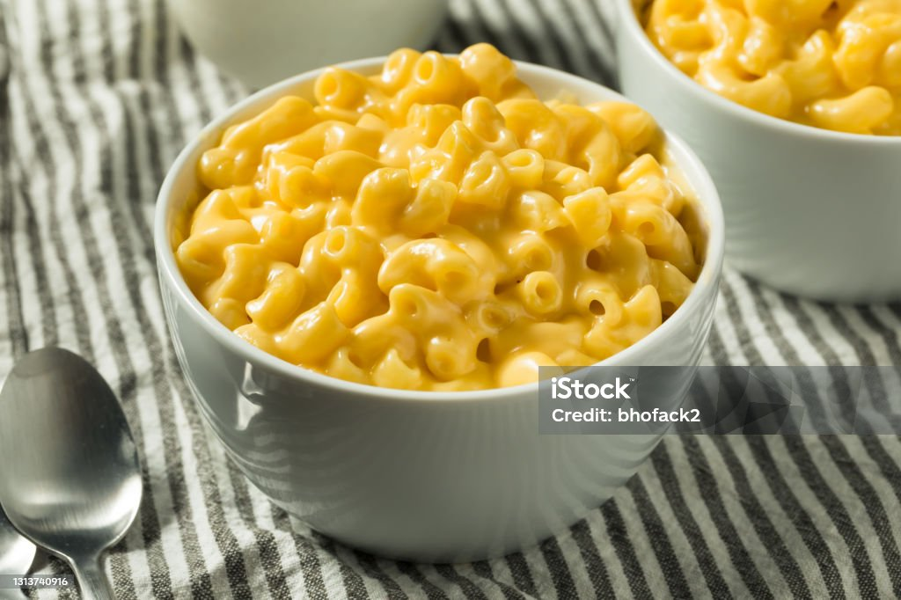

Home
Macaorni and Cheese

Description
An American classic! Nothing beats soft noodles drenched in warm melty cheese. Whether it's baked with bacon and breadcrumbs, or heated up from a box, macaroni and cheese is always a good side dish for whatever food you desire.
This recipe does not require any baking, and is in fact, a homemade recipe. The best part is, that you can adjust the ratios of ingredients to match however you prefer it! So impress your friends with homemade mac and cheese, and let's begin!
Ingredients
- 16oz box of noodles (any work, but Macaroni or sea shells work best)
- 3 Tbsp flour
- 3 Tbsp butter
- 1 cup of milk
- 1/2 cup chicken broth
- 2 Tbsp mustard
- 2 Cups of Cheddar cheese
NOTE: You can use any combination of cheeses that you like, the important thing is you start with 2 cups
Steps
- In a medium pot, boil water. Salt to taste
- When water boils, add noodles, cook for however long the box says (around 10-12 minutes)
- In a sauce pan over medium heat, melt the butter and mix it with the flour
- Once the roux has browned add the milk and chicken broth
- Add the mustard, and heat to medium-high, constantly stirring
- Once the milk mixture has thickened, remove from heat
- Add cheese and mix until cheese fully melted
- Add more cheese or mustard to your liking
- Strain noodles, and add them to the sauce
- Mix together and enjoy!
NOTE: You can start making the sauce when the noodles are done as well, the warm sauce will heat the noodles right back up!